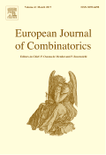

Revistas

- Applied Numerical Mathematics
- Computer Aided Geometric Design
-
 Mathematics Magazine
Mathematics Magazine
- Math Horizons
- Teaching Mathematics and Computer Science
- Chaos, Solitons & Fractals, Articles in Press
- Finite Elements in Analysis and Design
- Journal of Computational and Applied Mathematics, Volumen 200, Número 1, Páginas 1-458 (1 de MArzo de 2007)
- Mathematics and Computers in Simulation, Volumen 73, Números 1-4, Páginas 1-284 (6 de Noviembre de 2006)
- Computers & Mathematics with Applications, Volumen 52, Números 3-4, Páginas 259-592 (Agosto 2006)
- Numerical Methods in Biomedical Engineering
- Journal of Number Theory
-  European Journal of Combinatorics
- Applied Mathematics Letters
- Discrete Mathematics
- Sociedad Puig Adam de profesores de matemáticas
- The Electronic Journal of Combinatorics
-
 International Journal of Mathematical Education in Science and Technology
International Journal of Mathematical Education in Science and Technology
-
 The American Mathematical Monthly
The American Mathematical Monthly
- Oxford Journals | Mathematics & Physical Sciences | Teaching Mathematics and its Applications
-
 Mathematics of Computation
Mathematics of Computation
- Discrete Applied Mathematicsn
- Journal of Combinatorial Theory, Series A
- Journal of Combinatorial Theory, Series B
- IMPACT of Computing in Science and Engineering
- Publicationes Mathematicae
- The College Mathematics Journal Index
Favoritos

Biblioteca
Congresos y conferencias
IMR
Editoriales
Convocatorias Europeas
Geometría
- Balkan Journal of Geometry and Its Applications
- Computational Geometry Journals
- Fractals
- Geometry and Topology
- International Journal of Computational Geometry & Applications
- Journal of Geometry and Physics
- International Journal for Numerical Methods in Engineering
- International Journal of Computational Geometry & Applications
- Encyclopedia of Triangle Centers
- MathWorld: The Web's Most Extensive Mathematics Resource
- Fibonacci numbers and resources
Organizaciones
- ACM Publications
- AMATYC Publications
- IAMG
- SIAM Journals Online
- SIAM Journal on Scientific Computing (SISC)
- International Journal of Nonlinear Sciences and Numerical Simulation
- The Combinatorics Net
- ACM
- American Mathematical Society
- The American Society of Mechanical Engineers
- International Federation for Information Processing
- CIMNE
- IMACS
- Real Sociedad Matemática Española
- Gazette of the Australian Mathematical Society
- Ingeniería de Sistemas y Automática-UCM
- Fundación Puertos de Las Palmas
Problemas
Profesores
- Arthur T. Benjamin
- Bruce Simpson
- Charlie Colbourn
- Joseph O'Rourke
- John C. Polking
- Joseph E. Flaherty
- Leila De Floriani
- Luiz Velho
- Stanly Steinberg
- Robert J. Renka
- Rosa Maria Spitaleri
- Vera Pawlowsky-Glahn
- Rosa Donat
- Will Evans
- Andrej Dujella
- Michael Werman
- Mamikon
- Richard Brent
- Steve Maurer
- Bruce Sagan
- Charlie Colbourn
- Dr. Napoleon Gauthier
- Zhi-Hong Sun
- Helmut Prodinger
- Larry Hoehn
- Kurt Mehlhorn
- Nancy Hitschfeld K.
- Michael Hirschhorn
- Carl R. Yerger
- Henry W. Gould
- Richard P. Stanley
- MIGUEL A. LERMA
- Gary Brookfield
- David Eppstein
- Jesús De Loera
- Jonathan Shewchuk
- Kurt Mehlhorn
- Nancy Hitschfeld K.
- Pankaj K. Agarwal
- Christos H. Papadimitriou
- Paul Chew
- Subhash Suri
- MT de Berg
- GYULA KÁROLYI
- Thomas C. Hales
- Alberto Marquéz Pérez
- Enrique Ponce Nuñez
Universidades Extranjeras
- Carnegie Mellon University
- Rowan University
- Purdue University Department of Mathematics
- Western Sydney University
- Cornell University - The Center for Applied Mathematics
- Mathematical Problems - Problem Solving - Mathematical Competitions
- The MPI for Mathematics in the Sciences (MIS)
- The University of Texas at Austin
- European Journal of Applied Mathematics
- SECaM - Exeter University
Mozilla Firefox